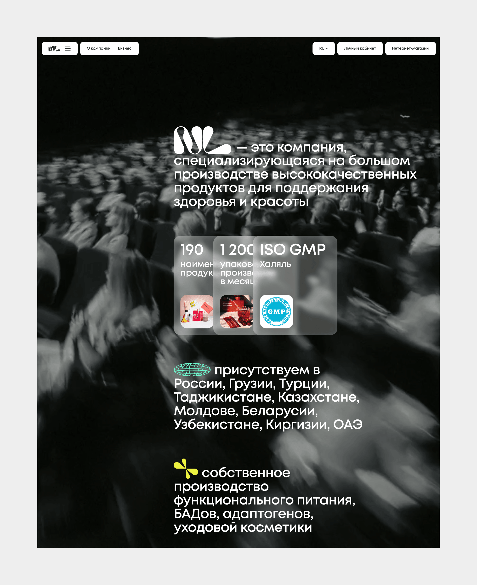
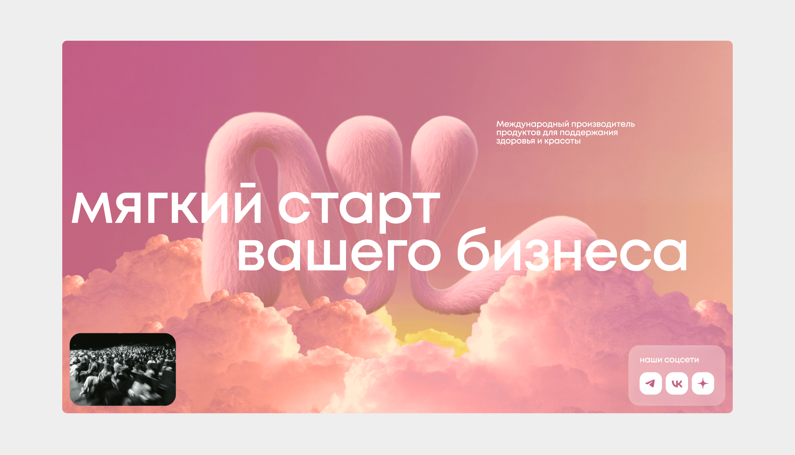
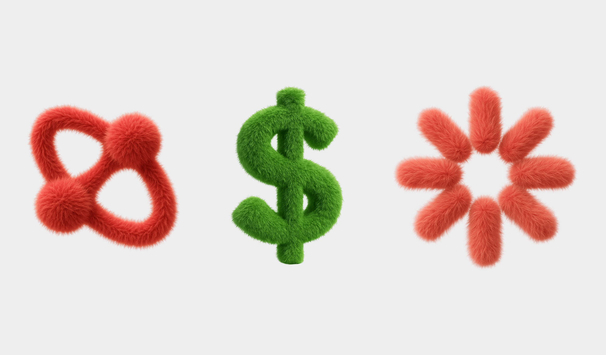
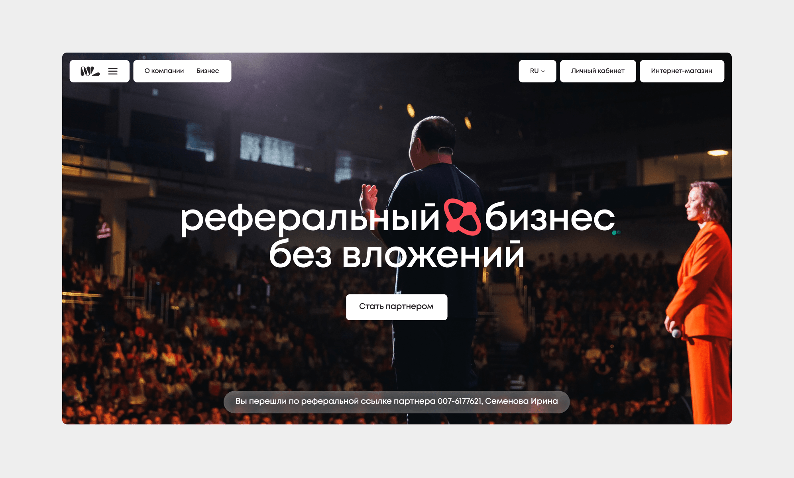
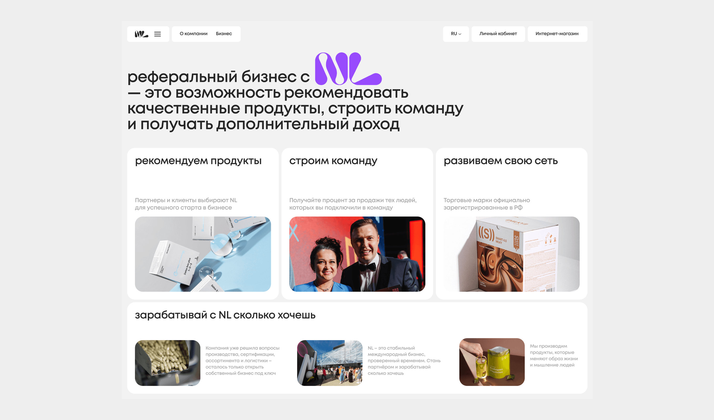

О проекте
NL International — компания, которая разрабатывает и производит продукты для поддержания здоровья и красоты, а также привлекает партнёров в свой бизнес для реализации продукции. В рамках проекта нужно было создать дизайн-концепт корпоративного сайта и перенести новую айдентику бренда в digital.
Основой концепции стало направление «комфортная среда»: идея в том, что NL — это комфортный и понятный партнёр для старта собственного бизнеса. Чтобы визуально передать это ощущение, логотип и элементы фирменного стиля получили мягкую, почти плюшевую текстуру. В рамках концепта были проработаны ключевые страницы, включая главную и страницу партнёрства.
Проблема
NL International работает на стыке товарного бизнеса и партнёрской модели. С одной стороны, это бренд с продуктами для здоровья и красоты. С другой — компания, которая предлагает людям войти в её экосистему как партнёрам и развивать бизнес на базе уже готовой системы.
Это важный нюанс, потому что сайт для такого бренда должен решать сразу несколько задач:
- презентовать сам бренд и его продукты;
- транслировать доверие;
- объяснять модель партнёрства;
- снижать тревожность у новых людей, которые только рассматривают вход в систему;
- визуально поддерживать айдентику и делать бренд цельным во всех точках контакта.

Задачи
1. Как перевести фирменный стиль в веб
Айдентика в статике и айдентика в интерфейсе — это не одно и то же. В вебе стиль должен работать в системе: на первом экране, в иерархии блоков, в карточках, кнопках, навигации, акцентах и атмосфере.
2. Как через визуал передать модель бренда
Для NL сайт — это не только площадка про продукты. Это ещё и вход в партнёрский сценарий. А значит, интерфейс должен помогать человеку подумать: «да, с этой компанией мне комфортно строить бизнес».
Моя роль
На проекте я отвечал за дизайн-концепт сайта. Моя задача заключалась в том, чтобы:
- понять, как новая айдентика может работать в digital;
- найти визуальную метафору, связанную с брендом;
- перевести фирменный стиль в интерфейсные решения;
- собрать концепт ключевых экранов сайта;
- показать, как бренд может выглядеть в вебе не фрагментарно, а как цельная система.
Что было важно решить в таком проекте
У подобных сайтов есть типичная проблема: они часто разваливаются на две несвязанные части.
Первая часть — это «корпоративная подача»: сухая информация о компании, много обещаний и мало характера.
Вторая — «партнёрская подача»: навязчивый, перегретый визуальный тон, который может вызывать недоверие.
В случае с NL было важно уйти от обеих крайностей и сделать так, чтобы сайт одновременно выглядел:
- дружелюбно;
- современно;
- комфортно;
- неагрессивно;
- уверенно.
Концепция

Основой концепта стало направление «комфортная среда». Его смысл в том, что NL — это не просто бренд с продуктами, а комфортный партнёр для старта собственного бизнеса. Важен именно этот эмоциональный ракурс: человек, который приходит на сайт, не должен чувствовать давление, жёсткий маркетинг или сложность входа.
Наоборот — сайт должен вызывать ощущение, что в эту систему можно войти постепенно, спокойно и без стресса.
Чтобы передать это ощущение визуально, я использовал мягкую трактовку айдентики: логотип и фирменные элементы получили плюшевую текстуру. Эта деталь работает не как декоративный эффект ради эффекта, а как носитель главной идеи проекта.
Почему «комфортная среда»?

Концепция «комфортной среды» решает сразу несколько задач:
1. Смягчает восприятие бренда
Если говорить о здоровье, красоте и бизнесе одновременно, легко уйти в жёсткий продающий тон. Мягкая текстура добавляет бренду человечности.
2. Создаёт эмоциональную дистанцию от агрессивного маркетинга
Для партнёрских и сетевых моделей это особенно важно. Человек должен чувствовать не давление, а безопасность.
3. Делает айдентику осязаемой
Когда фирменный стиль в digital получает физические свойства — мягкость, тактильность, пластичность — бренд начинает восприниматься как более живой.
Главная страница
Для такого бренда главная должна решать несколько задач сразу.
1. Быстро объяснять, кто перед нами
Пользователь должен сразу понять: это бренд в сфере здоровья и красоты, у которого есть продуктовая и партнёрская составляющие.
2. Создавать доверие
Без ощущения доверия человек не будет глубоко погружаться в историю бренда.
3. Задавать эмоциональный тон
Именно здесь концепция «комфортной среды» должна считываться сильнее всего.
4. Разводить два сценария
На сайте, скорее всего, есть как минимум две мотивации пользователя:
- узнать о бренде и продуктах;
- рассмотреть партнёрство.
Поэтому главная страница должна аккуратно направлять в нужный сценарий.
Партнерство

Для бренда с партнёрской моделью эта страница — одна из главных. Именно здесь человек принимает решение, хочет ли он взаимодействовать с системой дальше.
Здесь особенно важны три вещи:
1. Снижение тревожности
Партнёрство должно выглядеть не как что-то сложное и рискованное, а как понятный, поддерживаемый процесс.
2. Простая подача сценария
Пользователь должен быстро понять:
- что ему предлагают;
- как это работает;
- какой следующий шаг.
3. Визуальная дружелюбность
Если на этой странице стиль станет слишком агрессивным, концепция ломается. Поэтому мягкость здесь особенно важна.

Общие UI-принципы
Мягкость
Через текстуры, формы и общее настроение интерфейса.
Тактильность
Айдентика ощущается не плоской, а живой и почти физической.
Дружелюбие
Бренд не давит, а приглашает к взаимодействию.
Простота
Интерфейс не должен быть перегружен, иначе комфортная среда ломается.
Цельность
Айдентика работает на всех уровнях — от hero-блока до второстепенных элементов.
Результат
В рамках проекта был разработан дизайн-концепт корпоративного сайта, который:
- переносит новую айдентику бренда в digital;
- строится на идее комфортной среды;
- визуально смягчает восприятие партнёрской модели;
- помогает бренду выглядеть дружелюбно, современно и целостно;
- показывает, как фирменный стиль может работать в вебе не как декор, а как часть пользовательского опыта.